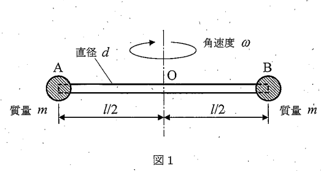

問題概要
2023年度の材料力学入試では、大問【1】で回転棒の遠心力による伸び、大問【2】で複合軸のねじり問題（不静定問題）が出題されました。動的荷重による変形解析と、ねじりの不静定解析が重要なテーマとなりました。
問題PDFをダウンロード (2023年度) 解答PDFをダウンロード (2023年度)大問【1】回転棒の遠心力による伸び
長さl、直径d、密度ρの一様な棒の両端に質量mの重りを取り付け、中央を軸として角速度ωで回転させる。この棒の遠心力による伸びを求めよ。

図1：問題1の説明図
考え方のヒント
回転による遠心力は慣性力の一種で、質量×半径×角速度²で表されます。棒自身の質量を考慮する場合は、位置によって張力が変化することに注意が必要です。
途中式と解答
(1) 端部の重りのみを考慮した場合の伸び
考え方のヒント
棒の質量を無視し、端部の重りによる遠心力のみを考慮します。この場合、棒全体に一定の張力がかかります。
遠心力の計算：
各重りの回転半径：\(r = \frac{l}{2}\)
各重りの遠心力：\(F = mr\omega^2 = m \cdot \frac{l}{2} \cdot \omega^2 = \frac{ml\omega^2}{2}\)
各重りの回転半径：\(r = \frac{l}{2}\)
各重りの遠心力：\(F = mr\omega^2 = m \cdot \frac{l}{2} \cdot \omega^2 = \frac{ml\omega^2}{2}\)
伸びの計算：
- 棒の断面積：\(A = \frac{\pi d^2}{4}\)
- 張力：\(T = F = \frac{ml\omega^2}{2}\)（棒全体で一定）
- 全伸び：\(\delta = \frac{TL}{AE} = \frac{F \cdot l}{AE}\) $$\delta = \frac{\frac{ml\omega^2}{2} \cdot l}{\frac{\pi d^2}{4} \cdot E} = \frac{2ml^2\omega^2}{\pi Ed^2}$$
答え: \(\delta = \frac{2ml^2\omega^2}{\pi Ed^2}\)
- 棒の断面積：\(A = \frac{\pi d^2}{4}\)
- 張力：\(T = F = \frac{ml\omega^2}{2}\)（棒全体で一定）
- 全伸び：\(\delta = \frac{TL}{AE} = \frac{F \cdot l}{AE}\) $$\delta = \frac{\frac{ml\omega^2}{2} \cdot l}{\frac{\pi d^2}{4} \cdot E} = \frac{2ml^2\omega^2}{\pi Ed^2}$$
(2) 棒の質量も考慮した場合の伸び
考え方のヒント
棒自身の質量による遠心力も考慮します。この場合、張力は位置によって変化するため、積分による解析が必要です。
可変張力の計算：
中心からの距離xにおける張力\(T(x)\)は：
端部重りによる張力：\(\frac{ml\omega^2}{2}\)
棒の外側部分による張力：\(\int_x^{l/2} (\rho A dr) r \omega^2 = \frac{\rho A \omega^2}{2}\left(\frac{l^2}{4} - x^2\right)\)
中心からの距離xにおける張力\(T(x)\)は：
端部重りによる張力：\(\frac{ml\omega^2}{2}\)
棒の外側部分による張力：\(\int_x^{l/2} (\rho A dr) r \omega^2 = \frac{\rho A \omega^2}{2}\left(\frac{l^2}{4} - x^2\right)\)
したがって：
$$T(x) = \frac{ml\omega^2}{2} + \frac{\rho A \omega^2}{2}\left(\frac{l^2}{4} - x^2\right)$$
伸びの計算：
微小要素\(dx\)の伸び：\(d\delta = \frac{T(x)}{AE}dx\)
全伸び： $$\delta = \int_{-l/2}^{l/2} \frac{T(x)}{AE} dx = 2\int_0^{l/2} \frac{T(x)}{AE} dx$$ 計算結果： $$\delta = \frac{2ml^2\omega^2}{\pi Ed^2} + \frac{\rho\omega^2 l^3}{12E}$$
答え: \(\delta = \frac{2ml^2\omega^2}{\pi Ed^2} + \frac{\rho\omega^2 l^3}{12E}\)
微小要素\(dx\)の伸び：\(d\delta = \frac{T(x)}{AE}dx\)
全伸び： $$\delta = \int_{-l/2}^{l/2} \frac{T(x)}{AE} dx = 2\int_0^{l/2} \frac{T(x)}{AE} dx$$ 計算結果： $$\delta = \frac{2ml^2\omega^2}{\pi Ed^2} + \frac{\rho\omega^2 l^3}{12E}$$
まとめ
回転による伸びは、端部重りによる項と棒自身の質量による項の和となります。第2項は棒の密度と長さの3乗に比例するため、長い棒では無視できない影響があります。
全体のポイント
- 遠心力の正確な計算
- 可変張力の扱い方
- 積分による全体変形の算出
- 質量分布の影響の理解
材料力学のチップス
- 遠心力は質量×半径×角速度²
- 分布質量では張力が位置の関数になる
- 対称性を利用して計算を簡略化
- 積分範囲の設定に注意